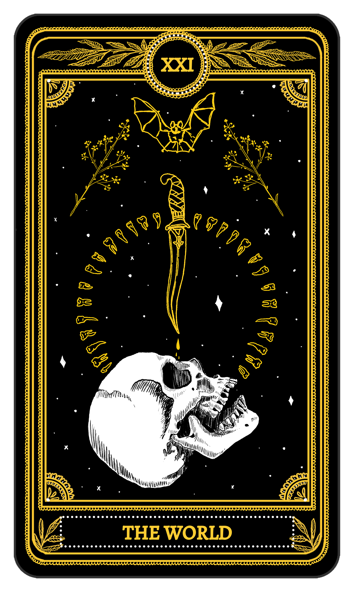

UPRIGHT: Completion, integration, accomplishment, travel
REVERSED: Seeking personal closure, short-cuts, delays
Given everything that has happened to lead up to this point, I’d enjoy considering what we have done over the course of our times here on the forums, whether that be on the forums themselves or in our personal lives.
Much has changed in my own life to the point where I cannot see myself as the kid I was a few years ago. I have new interests and a new perspective on life. I’ve seen the rise, then fall, then rise of my brother as he struggles to fully understand his goals.
Looking out, there’s a world beyond my understanding.
So many people have left here, either by issues, a feeling of necessity, or their own understanding that their journey ends here
And I wondered
When will I move on from the forums?
Have I reached apotheosis in regards to my involvement in this community?
What about the greater FM community?
I invite anyone reading this to say what they believe regarding their situation with these forums, or to talk about their experiences that happened over the course of their time on this forum.
~ Geyde